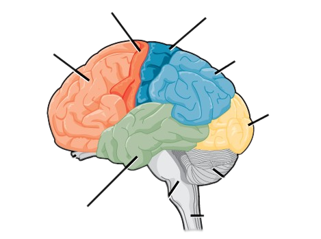

|

|
Brain Parts
- Occipital Lobes: The occipital lobe is the visual processing area
of the brain. It is associated with visuospatial processing, distance and
depth perception, color determination, object and face recognition, and memory
formation.
- Motor Cortex: The primary function of the motor cortex is to
generate signals to direct the movement of the body.
- Frontal Lobes: As the largest lobes in the brain, the frontal
lobes are important for voluntary movement, expressive language and for
managing higher level executive functions.
|
- Temporal Lobes: The Temporal lobe, which is inside your skull near
your temples and ears, plays a role in managing your emotions, processing
information from your senses, storing and retrieving memories, and
understanding language.
- Parietal Lobes: The parietal lobes are primarily responsible for
receiving and processing sensory input such as touch, pressure, heat, cold,
and pain.
- Sensory Cortex: The sensory cortex includes portions of the
cerebral cortex, that wrinkly outer layer of the brain that process and make
sense out of information gathered by our five senses.
|
|